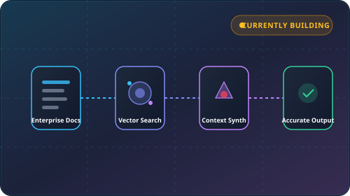
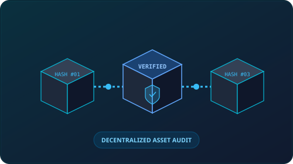
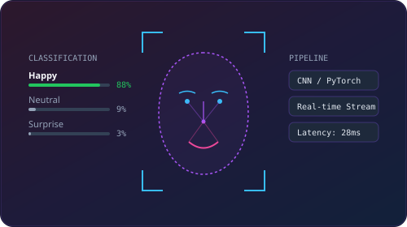
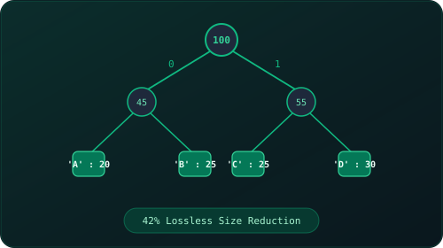

Roopesh Mamidala
Computer Science & Engineering graduate from the National Institute of Technology, Warangal (2024). Grounded in core data structures, algorithms, and systems design, with versatile hands-on experience spanning software development, data pipeline engineering (Microsoft Fabric), application workflow testing, and quantitative analysis.
Engineering Rigor & Technical Breadth
Leveraging a structured computer science education from NIT Warangal across full-lifecycle software development, data systems, and quality assurance.
I apply core computational principles to build dependable software, architect scalable data systems, and validate end-to-end quality.
Graduating with a B.Tech in Computer Science & Engineering from NIT Warangal in 2024 provided me with a disciplined grounding in algorithms, object-oriented design, data structures, and relational databases. Rather than confining myself to a single narrow track, I have cultivated hands-on capability across software engineering, modern data platforms, and quality assurance.
My practical exposure ranges from algorithmic data compression (Huffman coding) and decentralized distributed ledgers (blockchain frameworks) to lakehouse data engineering using Microsoft Fabric. Alongside development, I have executed application workflow testing, defect isolation, and process improvement across multi-city delivery operations.
Whether writing clean code, building semantic data pipelines, executing regression and functional test cases, or interpreting complex business requirements, I focus on delivering structured, verifiable technical outcomes.
National Institute of Technology, Warangal
Bachelor of Technology in Computer Science & Engineering • Graduated 2024
Software Engineering & Algorithms
Object-oriented programming, data structures, algorithm optimization, and clean implementation across C++, Python, Java, and SQL.
Data Engineering & Analytics
Microsoft Fabric lakehouses, semantic models, DAX, KQL, Power BI, and transformation pipelines for enterprise data.
Quality Assurance & Testing
Application workflow testing, user acceptance validation (UAT), regression checks, bug documentation, and SLA compliance.
Applied AI & Systems
Retrieval-Augmented Generation (RAG) pipelines, vector search, computer vision models, and applied machine learning.
Professional Experience
Applied professional background spanning analytical modeling, operational workflow management, and application testing.
Business Analyst Intern
- Kenyan SEZ Regulatory Analysis: Assessed tax incentives, duty exemptions, and investment viability frameworks under regional SEZ policies.
- Multi-Criteria Decision Modeling: Evaluated infrastructure readiness, local regulations, logistics corridors, and market access viability across target regions.
- Financial Modeling: Structured scenario-based financial models evaluating CAPEX, OPEX, working capital requirements, and sensitivity thresholds.
- Risk & Capacity Assessment: Conducted operational risk evaluations, mitigation frameworks, and production-capacity scalability reviews.
Operations Lead
- Multi-City Service Coordination: Coordinated operations across three city-based teams to ensure consistent execution standards and SLA adherence.
- Process Improvement: Mapped operational workflows to isolate delivery bottlenecks and streamline provider handoffs.
- KPI Tracking: Maintained KPI tracking mechanisms to measure response latency, order turnaround, and resolution metrics.
- Team Guidance & Workflows: Mentored team members on process execution and established standard operating procedures.
HR Analyst
- Application Testing & Workflow Validation: Conducted functional workflow testing and quality validation on internal service management applications, documenting bug edge-cases and operational SOPs.
- Order Delivery Management: Monitored fulfillment tracking for 550+ service orders, ensuring strict adherence to turnaround and quality SLAs.
- Workforce Sourcing: Executed structured recruitment and onboarding workflows for 300+ service providers across operational hubs.
- Client Escalation Handling: Investigated delivery bottlenecks, managed client escalations, and resolved service discrepancies.
Skills & Technical Capabilities
Structured skill categories spanning programming languages, data engineering architectures, quality testing, and developer tooling.
Programming
LANGUAGESData & Analytics
ANALYTICSData Architecture & Engineering
ENGINEERINGQuality Assurance & Testing
TESTING & QABusiness & Operations
BUSINESSWeb & Developer Tooling
DEV TOOLSTechnical Projects
Implementations covering algorithms, decentralized systems, computer vision, and active development in Generative AI.

RAG Project: Enterprise Knowledge Retrieval
An in-progress Retrieval-Augmented Generation pipeline connecting unstructured document sources with vector embeddings and grounded LLM inference to reduce hallucinations.

Blockchain-Based Theft Detection Framework
A decentralized distributed ledger framework designed to improve asset traceability, prevent unauthorized custody transfers, and provide cryptographic audit trails.

Face Expression Recognition
Applied deep learning Convolutional Neural Networks (CNNs) to localize facial landmark contours and classify human emotional expressions from camera input.

Data Compression using Huffman Encoding
Implemented lossless compression through frequency-based binary prefix trees, demonstrating algorithmic efficiency, bit serialization, and exact data reconstruction.
Certifications
Formal certifications in Microsoft Fabric, enterprise data analytics simulations, data structures, and deep learning.
Fabric Analytics Engineer Associate
Validation across data warehouses, lakehouses, semantic models, data preparation, security governance, SQL, KQL, and DAX query optimization.
Data Analytics Job Simulation
Practical simulation covering data cleaning, exploratory analysis, dashboard visualization, and formulating business recommendations.
Smart Coder Certification
Advanced data structures, dynamic programming algorithms, graph patterns, and optimal computational problem-solving.
Deep Learning Using Python
Foundational neural network theory, backpropagation mathematics, loss optimization, and deep learning implementation with TensorFlow/Keras.
Core Capabilities
Core analytical and technical contributions across software engineering, data platforms, and quality assurance.
Software Engineering & Algorithms
Deconstructing complex problem statements into modular, maintainable code architectures using core data structures and OOP principles.
Data Engineering & Lakehouses
Designing scalable lakehouse storage, semantic data layers, and automated ingestion pipelines using Microsoft Fabric and SQL.
Quality Assurance & Workflow Testing
Constructing functional test scenarios, isolating edge-case defects, and validating operational workflows against quality criteria.
Quantitative Analytics & Reporting
Developing semantic data models, DAX/KQL queries, and analytical dashboards to provide actionable operational metrics.
Applied AI & Retrieval Systems
Engineering vector search, semantic embeddings, and Retrieval-Augmented Generation (RAG) pipelines for verifiable inference.
Technical Requirements & Analysis
Translating business needs and operational workflows into clear technical specifications, user stories, and acceptance tests.
Process Optimization & SLA Governance
Mapping service delivery workflows, identifying execution bottlenecks, and instituting SLA tracking mechanisms.
Continuous Technical Adaptation
Rapidly acquiring proficiency in emerging toolchains, cloud environments, frameworks, and testing standards.
Data & AI Architecture
Applied AI systems require rigorous semantic data foundations to produce reliable, verifiable outputs.
My approach to emerging AI focuses on engineering the pipeline: consolidating structured and unstructured data in modern lakehouses (Microsoft Fabric), indexing via vector embeddings, and employing cross-encoder rerankers in RAG pipelines to eliminate model hallucinations.
Enterprise Lakehouse Layer
Consolidating transaction records and documents into structured Lakehouses.
Semantic Modeling & Vector Indexing
Structuring business entities (Fabric) and generating vector representations for semantic lookup.
Context Retrieval (RAG)
Retrieving verified context chunks to ground model inference with attributable source citations.
Operational Decision Support
Delivering high-reliability answers and automated summaries to business teams.